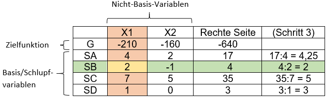
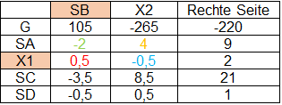

Schritt für Schritt Anleitung Simplex Tableau
1.Schritt: Tabelle befüllen

2.Schritt: Pivotspalte festlegen (hier rot)
Die Pivotspalte ist die Spalte, in der die Nicht-Basis-Variable der Zielzeile den kleinsten negativen Wert aufweist. Hier: X1 = -210.
3.Schritt: Pivotzeile festlegen (hier grün)
Hier wird für jede Zeile einer Schlupfvariablen jeweils (rechte Seite : Pivotspaltenelement) gerechnet, außer dieses Element ist negativ oder 0.
Die Zeile mit dem kleinsten Ergebnis ist unsere Pivotzeile. Hier: SB = 4:2 = 2.
4.Schritt: Pivotelement festlegen (hier gelb)
Das Pivotelement ist der Schnittpunkt von Pivotzeile und -spalte. Hier: X1, SB = 2.
5.Schritt: Neue Tabelle bilden

- Die Nicht-Basis-Variable der Pivotspalte und die Basisvariable der Pivotzeile werden getauscht. Hier: SB und X1
- Pivotelement* = Kehrwert des Pivotelementes. Hier: 2 -> 0,5
- Pivotspalte* = (Feld(alt)/Pivotelement)*(-1). Z. B. 4/2*(-1) = -2
- Pivotzeile* = (Feld(alt)/Pivotelement). Z. B. (-1)/2 = -0,5
- Restliche Felder = Feld(alt)-(Pivotzeile*Pivotspalte)/Pivotelement.
Z. B. 2-(4*(-1))/2 = 4. Die verwendeten Felder ergeben hierbei immer ein Quadrat.
6.Schritt: Wiederholen von Schritt 2 – 5, bis die Nicht-Basis-Variablen von G alle positiv sind.